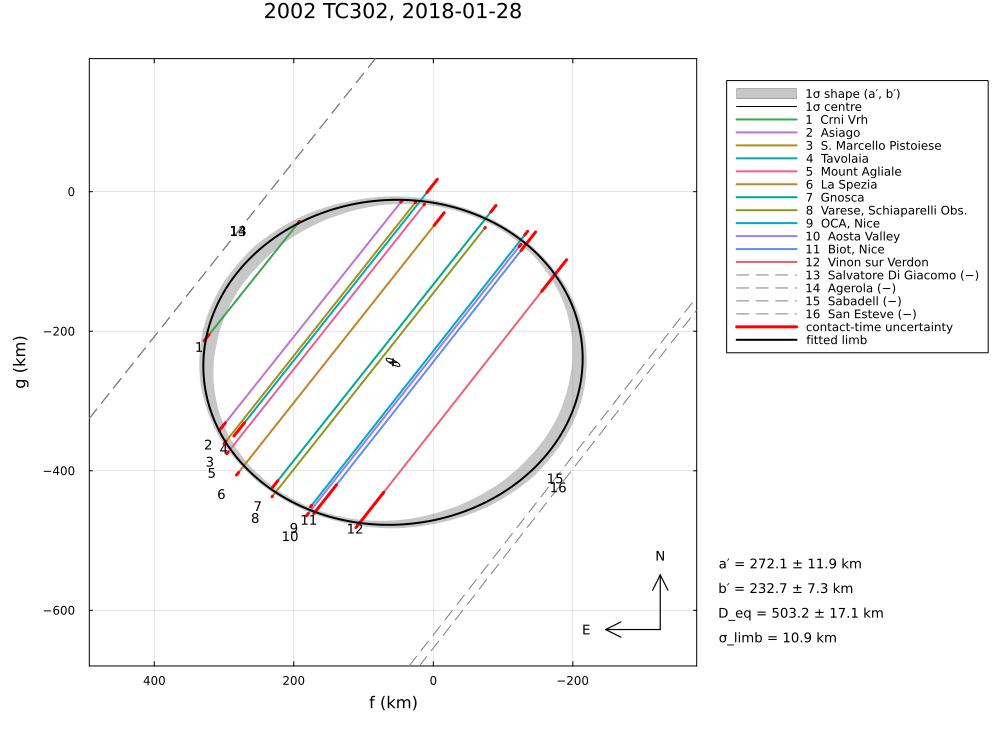
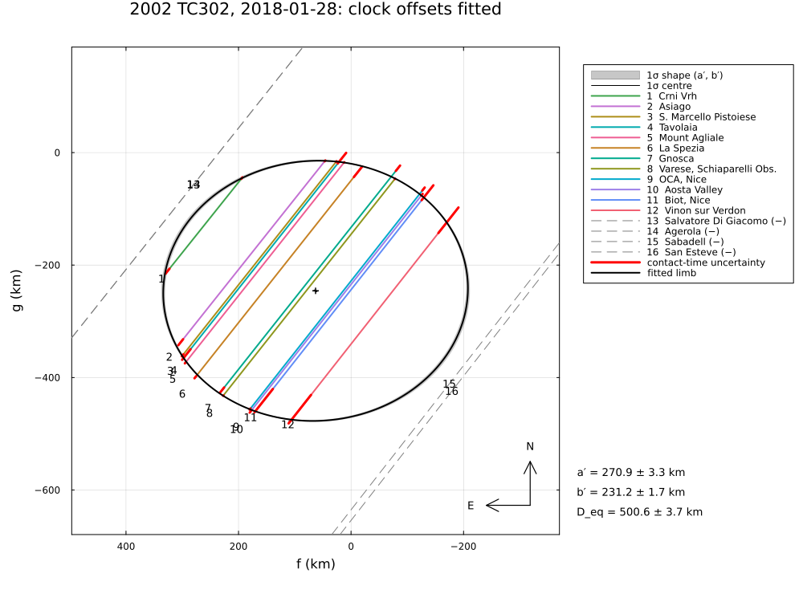
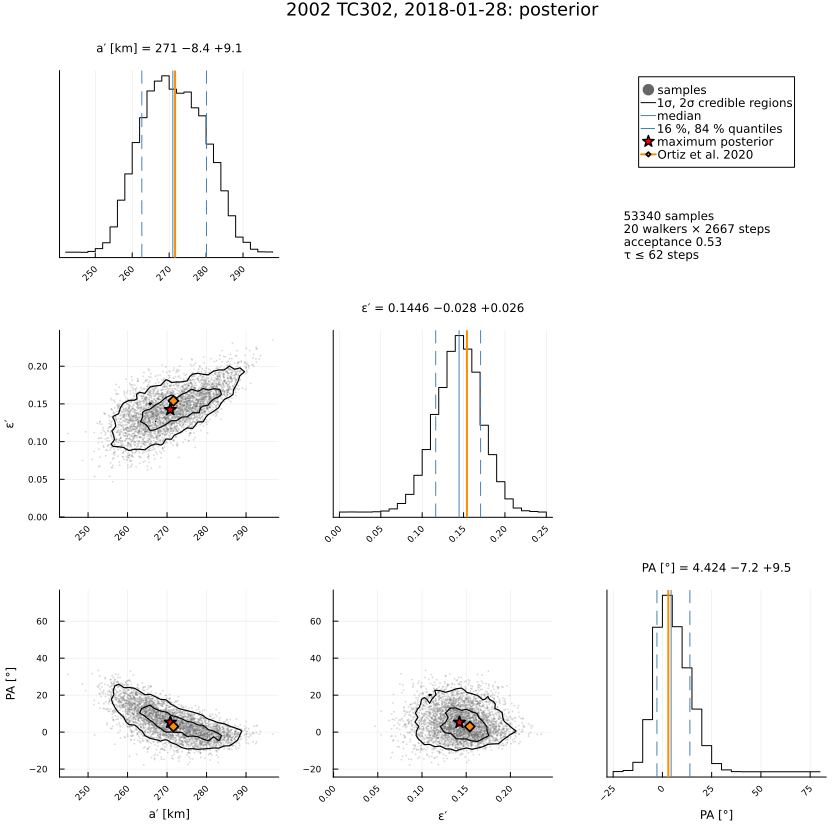

2002 TC302, 2018 January 28
The stellar occultation by the trans-Neptunian object 2002 TC302 on 2018 January 28, reduced from the published timings of Ortiz et al. (2020), A&A 639, A134, "The large trans-Neptunian object 2002 TC302 from combined stellar occultation, photometry, and astrometry data": twelve positive chords from Italy, France, Slovenia and Switzerland and four near misses, at a slow shadow velocity of 4.8 km/s.
The example covers:
- the star: the position of Table 1 is the Gaia DR2 position propagated to the epoch J2000.0, 0.64″ (≈ 20 000 km at the body) from the star at the event; the Gaia DR2 catalogue position with its proper motion is used;
- the limb fit with the timing errors only (the chords scatter far beyond their errors), with a limb allowance σ_limb, and with clock offsets (the paper aligned the chord centres on a line);
- the near misses, the posterior, the area-equivalent diameter and the astrometry.
The published ellipse: axes 543.2 ± 18 km and 459.5 ± 11 km (full axes), position angle of the minor axis 3 ± 1°, area-equivalent diameter 499.6 km.
The data are transcribed in examples/data/2002tc302_20180128.jl, with the stored JPL Horizons ephemeris, so the script runs offline:
julia --project=. examples/2002tc302_2018.jl [output_dir] (default: examples/output/2002tc302_2018)The code is not run when the manual is built. The output after each section is that of the last run of examples/2002tc302_2018.jl, stored in examples/output/2002tc302_2018/output.txt.
using Occultations, Random, Printf, Statistics
using Plots
import CairoMakie # saves the GeoMakie maps (Makie figures)
include(joinpath(@__DIR__, "standard_figures.jl"))
include(joinpath(@__DIR__, "data", "2002tc302_20180128.jl"))
out = length(ARGS) >= 1 ? ARGS[1] : mkpath(joinpath(@__DIR__, "output", "2002tc302_2018"))
rng = MersenneTwister(2018)
P = TC302_PAPER
row(label, r) = @printf("%-40s a′ = %5.1f ± %4.1f b′ = %5.1f ± %4.1f PA = %5.1f ± %4.1f D_eq = %5.1f ± %4.1f χ²/dof = %6.2f\n",
label, r[:equatorial_radius]..., r[:semi_minor_axis]..., mod(r[:position_angle][1], 180),
r[:position_angle][2], 2r[:equivalent_radius][1], 2r[:equivalent_radius][2], reduced_chi2(r))Event and geometry (paper values in parentheses)
ev = tc302_event()
D = ev.ca.dist_km
@printf("%d positive chords and %d near misses; distance %.2f au, shadow velocity %.2f km/s (%.2f)\n",
count(ispositive, ev.chords), count(isnegative, ev.chords), D / 1.495978707e8, ev.ca.vel, P.velocity)
@printf("stellar diameter %.2f km, Fresnel scale %.2f km at 0.7 µm\n", apparent_diameter(ev.star, D), fresnel_scale(0.7, D))The star of Table 1, "J2000 coordinates" 02 21 49.3853105797 +28 24 13.439342645, against Gaia DR2 propagated to the event:
ra_t, dec_t = parse_ra("02 21 49.3853105797"), parse_dec("+28 24 13.439342645")
ra_e, dec_e = geocentric(ev.star, ev.tref)
@printf("Table 1 position − star at the event: Δα cos δ = %+.0f mas, Δδ = %+.0f mas (%.0f km at the body)\n",
(ra_t - ra_e) * cosd(dec_e) * 3.6e6, (dec_t - dec_e) * 3.6e6,
hypot((ra_t - ra_e) * cosd(dec_e), dec_t - dec_e) * 3.6e6 / 206264806.247 * D)
println("(Gaia DR2 propagated to J2000.0: the Table 1 position is the star 18 years before the event)")12 positive chords and 4 near misses; distance 44.48 au, shadow velocity 4.77 km/s (4.77)
stellar diameter 0.29 km, Fresnel scale 1.53 km at 0.7 µm
Table 1 position − star at the event: Δα cos δ = -637 mas, Δδ = +128 mas (20975 km at the body)
(Gaia DR2 propagated to J2000.0: the Table 1 position is the star 18 years before the event)Limb fits
@printf("%-40s a′ = %5.1f ± %4.1f b′ = %5.1f ± %4.1f PA = %5.1f ± %4.1f D_eq = %5.1f\n", "published (Sect. 5)", P.a...,
P.b..., P.position_angle..., P.D_eq)1. Timing errors only. The chords scatter far more than their timing errors allow:
r0 = fit_limb(ev; rng=rng)
row("timing errors only", r0)2. A limb allowance σ_limb (χ²/dof = 1), with residuals along the chords and radial (as SORA):
rc = fit_limb(ev; σ_limb=:auto, rng=rng)
row(@sprintf("along chords, σ_limb = %.1f km", rc.problem.σ_limb), rc)
rr = fit_limb(ev; residual=:radial, σ_limb=:auto, rng=rng)
row(@sprintf("radial, σ_limb = %.1f km", rr.problem.σ_limb), rr)3. Clock offsets. The paper shifts the chords so that their centres lie on a straight line (Tavolaia had no time stamps in its images; NTP-synchronised cameras can be off by a few tenths of a second). The Bayesian counterpart: a clock offset for every chord with a prior N(0, 0.5 s), N(0, 3 s) for Tavolaia, all chords keeping their timing errors:
names = [c.name for c in ev.chords if ispositive(c)]
priors = Dict(Symbol("dt_", n) => (0.0, n == "Tavolaia" ? 3.0 : 0.5) for n in names)
rt = fit_limb(ev; fit_dt=names, priors=priors, rng=rng)
row("clock offsets, priors N(0, 0.5 s)", rt)
println("fitted clock offsets [s]: ", join([@sprintf("%s %+.2f", k, v[1]) for (k, v) in sort(collect(clock_offsets(rt)))], ", "))published (Sect. 5) a′ = 271.6 ± 9.0 b′ = 229.8 ± 5.5 PA = 3.0 ± 1.0 D_eq = 499.6
timing errors only a′ = 260.0 ± 1.4 b′ = 228.5 ± 1.4 PA = 12.1 ± 2.0 D_eq = 487.6 ± 2.4 χ²/dof = 12.80
along chords, σ_limb = 10.9 km a′ = 272.1 ± 11.9 b′ = 232.7 ± 7.3 PA = 4.2 ± 11.2 D_eq = 503.2 ± 17.1 χ²/dof = 1.00
radial, σ_limb = 10.0 km a′ = 270.8 ± 12.7 b′ = 231.0 ± 9.0 PA = 7.6 ± 13.8 D_eq = 500.2 ± 19.4 χ²/dof = 1.00
clock offsets, priors N(0, 0.5 s) a′ = 270.9 ± 3.3 b′ = 231.2 ± 1.7 PA = 3.5 ± 2.3 D_eq = 500.6 ± 3.7 χ²/dof = 10.84
fitted clock offsets [s]: Aosta Valley +0.57, Asiago -0.14, Biot, Nice -0.09, Crni Vrh -0.39, Gnosca -0.88, La Spezia +1.28, Mount Agliale +0.22, OCA, Nice -1.44, S. Marcello Pistoiese -0.27, Tavolaia -4.85, Varese, Schiaparelli Obs. +1.29, Vinon sur Verdon -0.03Near misses
for x in check_negative_chords(rc)
@printf(" %-22s %s, %5.1f km from the limb\n", x.chord, x.conflict ? "CROSSES THE LIMB" : "consistent", x.distance)
end Sabadell consistent, 31.0 km from the limb
Salvatore Di Giacomo consistent, 36.2 km from the limb
Agerola consistent, 36.5 km from the limb
San Esteve consistent, 42.6 km from the limbPosterior (along the chords with σ_limb)
post = sample(rc; nsteps=4000, rng=rng)
display(post)
ds = derived_summary(post; rng=rng)
@printf("D_eq = %.1f −%.1f +%.1f km (published %.1f km), b′ = %.1f −%.1f +%.1f km\n", 2ds.equivalent_radius.median,
2ds.equivalent_radius.minus, 2ds.equivalent_radius.plus, P.D_eq, ds.semi_minor_axis.median,
ds.semi_minor_axis.minus, ds.semi_minor_axis.plus)The thermal diameter (584 +105 −88 km, Fornasier et al. 2013) exceeds the occultation one by ≈ 80 km; the paper suggests an unresolved satellite of 100–300 km. None of the twelve light curves shows a secondary drop.
Posterior of LimbProblem: 20 walkers × 4000 steps (burn-in 1333), acceptance 0.53
center_f = 58.982347 -8.610387 +9.226442
center_g = -244.270635 -5.240186 +5.973243
equatorial_radius = 270.998343 -8.397548 +9.119133
oblateness = 0.144584 -0.028252 +0.025990
position_angle = 4.423906 -7.202750 +9.525174
D_eq = 502.9 −13.6 +11.2 km (published 499.6 km), b′ = 232.2 −6.2 +5.8 kmAstrometry
a = astrometry(rc)
@printf("RA %s Dec %s at %s UTC (σ %.2f, %.2f mas); offset from JPL Horizons Δα cos δ = %+.2f, Δδ = %+.2f mas\n",
a.ra_str, a.dec_str, isot(a.epoch; digits=1), a.ra_err, a.dec_err, a.offset_ra, a.offset_dec)RA 02 21 49.44338 Dec +28 24 13.4122 at 2018-01-28T21:53:36.6 UTC (σ 0.46, 0.33 mas); offset from JPL Horizons Δα cos δ = +1.79, Δδ = -7.58 masFigures
savefig(plot(ev; title="2002 TC302, 2018-01-28: chords", size=(1000, 750)), joinpath(out, "2002tc302_chords.png"))
savefig(plot(rt; title="2002 TC302, 2018-01-28: clock offsets fitted", size=(1000, 750)),
joinpath(out, "2002tc302_clock_offsets.png"))
savefig(cornerplot(post; vars=[:equatorial_radius, :oblateness, :position_angle],
axislabels=Dict(:equatorial_radius => "a′ [km]", :oblateness => "ε′", :position_angle => "PA [°]"),
truths=Dict(:equatorial_radius => P.a[1], :oblateness => 1 - P.b[1] / P.a[1],
:position_angle => P.position_angle[1]), truth_label="Ortiz et al. 2020"),
joinpath(out, "2002tc302_corner.png"))
# the standard figures: limb fits (default, 68.3 % region, as the paper), posterior, maps (prediction,
# post-fit, comparison) and the globe
standard_figures("2002tc302", rc; out=out, posterior=post, paper=(fit=rt, uncertainty=:pointwise, nsigma=1),
projection="+proj=laea +lon_0=10 +lat_0=44", limits=(-2, 22, 36, 52), window=600, marks=60)
println("figures written to ", out)The limb fit along the chords with σ_limb, and the fit with clock offsets:


The posterior of the ellipse, with the published values:
